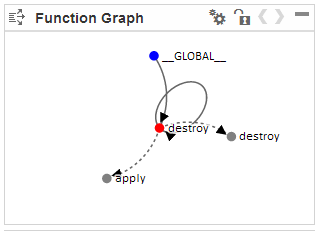
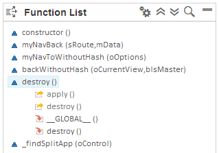

Displaying the Function Flow
The function flow is a tool that allows you to view an outline list and code flow visualization of the functions called within a JavaScript file. It also lets you display code previews of function definitions as well as navigate directly to the function definitions in the source code.
Context
The function flow provides a graphical and list view of the functions in a file.
-
Function graph: Shows the calls being made from and to the currently active function (based on your cursor position):
-
Red node: the currently active function
-
Blue nodes: functions defined in the displayed file
-
Gray nodes: functions defined elsewhere
-
Dotted arcs: calls to functions defined in the same file
-
Solid arcs: calls to functions defined elsewhere
-
-
Function list: Shows an outline of the functions and objects (which in turn contain functions) present in the code. The active function shows, when expanded, the calls being made from and to it:
-
Calls this function
-
Is called by this function
-
Procedure
-
Open a JavaScript file and choose
 (Show function
flow) in the toolbar.
The Outline panel opens on the right. The caller-callee relationships of the function or object in which the cursor is positioned are shown in both the graph and list.
(Show function
flow) in the toolbar.
The Outline panel opens on the right. The caller-callee relationships of the function or object in which the cursor is positioned are shown in both the graph and list.Example:
 